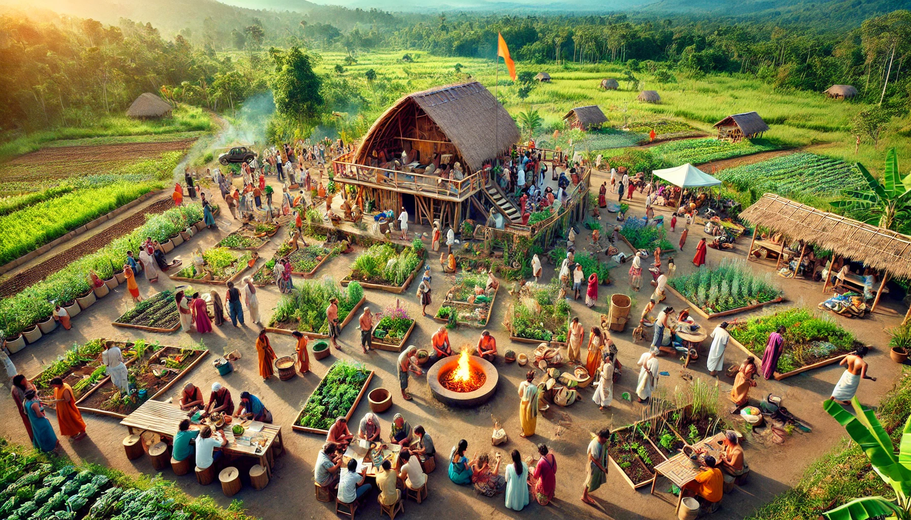

Community Engagement Plan
-
Course Enrollment & Participation:
- Open to the public, educational institutions, and wellness enthusiasts.
- Online & offline registration options.
- Volunteer programs for hands-on learning.
-
Community-Based Learning Approach:
- Monthly and seasonal workshops aligned with nature’s cycles.
- Guest lectures from experts in Ayurveda, yoga, and sustainable farming.
- Certification programs for participants.
-
Sustainability & Growth Strategy:
- Membership-based model for continued learning and access to facilities.
- Integration of digital platforms for remote learning.
- Community farming initiatives to promote self-sufficiency.
-
Outreach & Awareness:
- Collaboration with schools, universities, and wellness centers.
- Social media & local event promotions.
- Eco-tourism programs to attract international participants.
